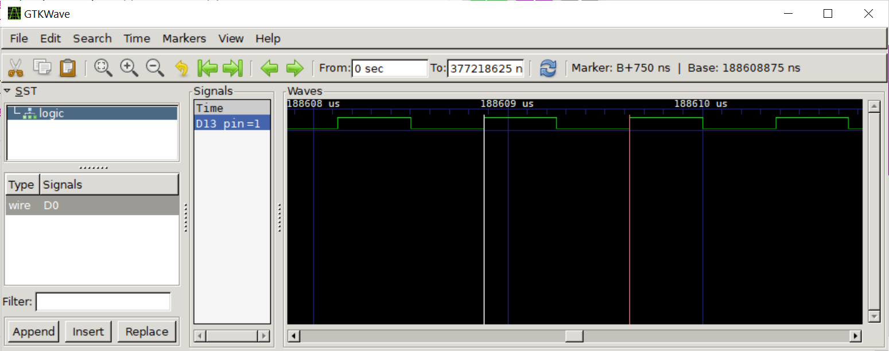
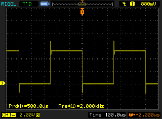

การเขียนโค้ด GCC AVR - Inline Assembly#
Keywords: AVR Assembly, Arduino Inline Assembly, I/O Toggle
▷ GCC-AVR Assembly for Arduino#
บทความนี้กล่าวถึง การทดลองเขียนโค้ด AVR Assembly สำหรับไมโครคอนโทรลเลอร์ที่ใช้ซีพียูตระกูล AVR เช่น ชิป ATmega328P ที่อยู่บนบอร์ด Arduino อย่างเช่น Uno R3 และ Nano v3 และใช้วิธีการแทรกโค้ดภาษา GCC AVR Assembly ("แอสเซมบลี") ในโค้ด Arduino Sketch (ภาษา C/C++) และสามารถคอมไพล์โค้ดได้โดยใช้ซอฟต์แวร์ Arduino IDE หรือจำลองการทำงานด้วย Wokwi AVR Simulator
โดยปรกติแล้ว การเขียนโค้ด Arduino Sketch สำหรับบอร์ด Arduino แบบต่างๆ จะใช้ภาษา C/C++ และเรียกใช้ฟังก์ชันหรือคำสั่งต่างๆ ของ Arduino API หรือใช้คลาส (C++ Classes) เพื่อสร้างอ็อบเจกต์ (Objects) และเรียกใช้เมธอดต่างๆ (Methods) ซึ่งทำให้สะดวกและง่ายในการเขียนโค้ด
แต่การเขียนโปรแกรมในระดับล่างสำหรับ AVR จะเกี่ยวข้องกับการใช้งานชุดคำสั่ง (AVR Instruction Set) จำแนกเป็น AVR, MegaAVR, TinyAVR เป็นต้น และจะต้องเขียนโค้ดโดยใช้ภาษาที่เรียกว่า GCC AVR Assembly ซึ่งเป็นภาษาคอมพิวเตอร์ในระดับล่าง และการเขียนโค้ดด้วยภาษาดังกล่าว ต้องอาศัยความรู้ความเข้าใจเกี่ยวกับชุดคำสั่ง สถาปัตยกรรมและการจัดการภายในชิปของไมโครคอนโทรลเลอร์
▷ ตัวอย่างโค้ด 1: I/O Toggle using Arduino Functions#
การเขียนโปรแกรมเพื่อกำหนดสถานะการทำงานของขา GPIO (General-Purpose I/O) ของชิปไมโครคอนโทรลเลอร์ ก็ถือว่าเป็นโจทย์ฝึกปฏิบัติในระดับพื้นฐาน ชิป AVR เป็นซีพียูขนาด 8 บิต ดังนั้นการจัดการและใช้งานข้อมูลจึงมีขนาด 8 บิต (แต่มีคำสั่งขนาด 16 บิต)
ในส่วนที่เกี่ยวข้องกับขา I/O ก็มีการจัดแบ่งเป็นกลุ่มของขา หรือที่เรียกว่า "พอร์ต" (Port) ตั้งชื่อเป็นพอร์ต A, B, C เป็นต้น แต่ละพอร์ตมีขนาด 8 บิต และมีขา I/O ที่เกี่ยวข้องจำนวน 8 ขา
ในส่วนที่เกี่ยวข้องกับการทำงานของแต่ละพอร์ต ก็มีรีจิสเตอร์ที่เกี่ยวข้อง (I/O Registers) เช่น
DDRx, PORTx, PINx (x แทนชื่อพอร์ต) เป็นต้น
รีจิสเตอร์เหล่านี้ใช้สำหรับการกำหนดทิศทางของขา I/O ในพอร์ตเดียวกัน
การเขียนหรืออ่านค่าของพอร์ตครั้งละ 8 บิต การเปิดใช้งานวงจรตัวต้านทานภายในแบบ
Pullup สำหรับขาอินพุต เป็นต้น
สมมุติว่า เราต้องการสร้างสัญญาณเอาต์พุตที่ขา D13 ของบอร์ด Arduino (ตรงกับขา PORTB5 หรือ PB5) ซึ่งมีวงจร LED อยู่บนบอร์ดแล้ว และให้มีสถานะทางลอจิกสลับไปเรื่อย ๆ (I/O Toggle) แต่ต้องการให้ได้ความถี่สูงสุด ก็อาจจะเขียนโค้ดแบบนี้โดยใช้คำสั่งของ Arduino API (ไม่มีการใช้คำสั่งสำหรับหน่วงเวลาการทำงาน)
void setup() {
pinMode( 13, OUTPUT ); // use D13 as an output pin
digitalWrite( 13, LOW ); // output low
}
void loop() {
digitalWrite( 13, HIGH ); // output high
digitalWrite( 13, LOW ); // output low
}
หากทดสอบการทำงานของโค้ดตัวอย่างนี้โดยใช้บอร์ด Arduino และวัดสัญญาณที่ขาเอาต์พุต PB5 จะได้รูปคลื่นสัญญาณดังนี้

รูป: แสดงคลื่นสัญญาณที่วัดด้วยเครื่องออสซิลโลสโคปแบบดิจิทัลสำหรับตัวอย่างโค้ด 1
จากรูปคลื่นสัญญาณจะเห็นได้ว่า ความกว้างของพัลส์ช่วงที่เป็น HIGH ได้ประมาณ 3.16 us และช่วงที่เป็น LOW ได้ประมาณ 3.56 us หรือหนึ่งรอบการทำงานของลูปใช้เวลาประมาณ 6.72 us (= 3.16 + 3.56 us) หากคำนวณความถี่จากส่วนกลับของหนึ่งคาบ จะได้ประมาณ 149 kHz (= 1/6.72 us)
▷ ตัวอย่างโค้ด 2: Register-based I/O Programming#
จากตัวอย่างโค้ดแรก ถ้าแก้ไขโค้ดใหม่ โดยการเข้าถึงรีจิสเตอร์ของ AVR / ATmega328P
(เรียกว่า Special Function Registers: SFRs) อย่างเช่น DDRB และ PORTB
และไม่ใช้คำสั่ง pinMode() และ digitalWrite() ก็มีตัวอย่างดังนี้
void setup() {
DDRB |= (1 << 5); // set DDRB bit 5 = 1 (output direction)
PORTB &= ~(1 << 5); // clear bit PB5 (output low at PB5)
}
void loop() {
PORTB |= (1 << 5); // set bit PB5 (output high at PB5)
PORTB &= ~(1 << 5); // clear bit PB5 (output low at PB5)
}

รูป: แสดงคลื่นสัญญาณสำหรับตัวอย่างโค้ด 2 (เขียนค่าลงในรีจิสเตอร์ PORTB)
จากรูปคลื่นสัญญาณจะเห็นได้ว่า ความกว้างของพัลส์ช่วงที่เป็น HIGH ได้ประมาณ 128 ns และช่วงที่เป็น LOW ได้ประมาณ 372 ns หรือได้หนึ่งคาบเท่ากับ 500 ns (ความถี่ 2MHz) หรือคิดเป็น 0.500 us / (1/16MHz) = 8 CPU cycles ต่อการวนลูปหนึ่งครั้ง
เมื่อเปรียบเทียบกับตัวอย่างแรก จะเห็นได้ว่า โค้ดในตัวอย่างที่ 2 ได้สัญญาณเอาต์พุตที่มีความถี่สูงกว่า (ได้ 2MHz ซึ่งสูงกว่า 149kHz)
หากศึกษาฟังก์ชันการทำงานของรีจิสเตอร์ PINB ที่เกี่ยวข้องกับพอร์ต B ของ AVR
จะพบว่า การเขียนค่าบิตเป็น 1 ในตำแหน่งใด จะทำให้เกิดการเปลี่ยนสถานะบิตที่ตำแหน่งดังกล่าว
เมื่อใช้งานเป็นขาเอาต์พุต ดังนั้นจึงเขียนโค้ดแบบใหม่ได้ดังนี้
void setup() {
DDRB |= (1 << 5); // set DDRB bit 5 = 1
PORTB |= (1 << 5); // set PORTB bit 5 = 1
}
void loop() {
PINB |= (1 << 5); // toggle PB5 by writing 1 to PINB at bit 5
}
จากรูปคลื่นสัญญาณจะเห็นได้ว่า ความกว้างของพัลส์ช่วงที่เป็น HIGH และ LOW ได้ประมาณ 375 ns หรือได้หนึ่งคาบเท่ากับ 750 ns (ความถี่ 1.33MHz) หรือคิดเป็น 0.750 us / (1/16MHz) = 12 cycles ต่อการวนลูปหนึ่งครั้ง

รูป: แสดงคลื่นสัญญาณสำหรับตัวอย่างโค้ด 2 (เขียนค่าลงในรีจิสเตอร์ PINB)
หากตรวจสอบการทำงานของโค้ดด้วยวิธีการจำลองการทำงานของโปรแกรม เช่น Wokwi AVR Simulator และบันทึกการเปลี่ยนแปลงลอจิกที่ขาเอาต์พุตลงในไฟล์ .vcd แล้วใช้โปรแกรม GTKWave แสดงผล ก็จะได้ตามรูปดังนี้
รูป: การจำลองการทำงานสำหรับบอร์ด Arduino Nano v3 โดยใช้ Wokwi AVR Simulator
รูป: แสดงผลเป็นรูปคลื่นสัญญาณดิจิทัล และวัดความกว้างของพัลส์ระหว่างขอบขาขึ้นและขอบขาลงถัดไป ได้เท่ากับ 375 ns หรือคิดเป็น 0.375 us / (1/16MHz) = 6 cycles

รูป: แสดงผลรูปคลื่นสัญญาณดิจิทัล และวัดความกว้างของหนึ่งคาบระหว่างขอบขาขึ้นสองครั้งถัดไป ได้เท่ากับ 750 ns หรือได้ความถี่ของเอาต์พุตเท่ากับ 1.333 MHz (หรือคิดเป็น 12 cycles) ซึ่งตรงกับกรณีที่วัดได้ด้วยเครื่องออสซิลโลสโคป
ข้อสังเกต: เราสามารถเขียนโค้ด AVR Assembly และจำลองการทำงานด้วย Wokwi AVR Simulator บนหน้าเว็บเบราว์เซอร์ได้เช่นกัน (ให้สร้างไฟล์ .S สำหรับเขียนโค้ด และในไฟล์ .ino ไม่ต้องมีโค้ดใด ๆ)
รูป: ตัวอย่างการเขียนโค้ด AVR Assembly และจำลองการทำงานด้วย Wokwi AVR Simulator
▷ ตัวอย่างโค้ด 3: Inline AVR Assembly#
ลองดูตัวอย่างการเขียนโค้ด Inline Assembly สำหรับ GCC AVR
โดยใช้ประโยคคำสั่ง เช่น asm volatile(...) และมีการสร้าง C Macros เช่น
led_output()ให้ขา I/O สำหรับ LED เป็นขาเอาต์พุตled_high()ให้ขาสำหรับ LED มีสถานะลอจิกเป็น HIGH (1)led_out()ให้ขาสำหรับ LED มีสถานะลอจิกเป็น LOW (0)
เริ่มต้นมีการกำหนดให้ขา Arduino D13 ซึ่งตรงกับ PORTB บิตที่ 5 ให้เป็นเอาต์พุต ดังนั้นจึงเขียนค่าเป็น 1
ให้บิตที่ 5 ในรีจิสเตอร์ DDRB (ใช้สัญลักษณ์แทนด้วย DDB5 ซึ่งหมายถึง ค่าคงที่เท่ากับ 5)
สำหรับระบุทิศทางของขาดังกล่าวให้เป็นเอาต์พุต โดยใช้คำสั่ง sbi (set bit)
การกำหนดให้ขาเอาต์พุตดังกล่าว (บิตที่ 5 ของรีจิสเตอร์ PORTB)
มีสถานะลอจิกเป็น 1 ก็ใช้คำสั่ง sbi (set bit) หรือเป็น 0 ก็ใช้คำสั่ง cbi (clear bit)
#define led_output() \
asm volatile("sbi %0,%1" :: "I" (_SFR_IO_ADDR(DDRB)), "I" (DDB5))
#define led_high() \
asm volatile("sbi %0,%1" :: "I" (_SFR_IO_ADDR(PORTB)), "I" (PORTB5))
#define led_low() \
asm volatile("cbi %0,%1" :: "I" (_SFR_IO_ADDR(PORTB)), "I" (PORTB5))
void setup() {
led_output();
}
void loop() {
led_high();
led_low();
}
ลองมาดูอีกรูปแบบหนึ่งในการเขียนโค้ดในภาษา GCC AVR Assembly
// cpu_freq. 16MHz / clock cycle = 1/16 usec
// => 1/16 usec x 6 cycles = 0.375 usec or 2.667 MHz
void setup() {
// set DDB5 as output
asm volatile("sbi %0,%1" :: "I" (_SFR_IO_ADDR(DDRB)), "I" (DDB5));
}
void loop() {
asm volatile (
"L0: sbi %0,%1 \n\t" // [2C] set bit 5 in register PORTB
" cbi %0,%1 \n\t" // [2C] clear bit 5 in register PORTB
" rjmp L0 \n\t" // [2C] relative jump (backward) to label 0:
:: "I" (_SFR_IO_ADDR(PORTB)), "I" (PORTB5)
);
// "I": used as input arguments %0 and %1 respectively
}
การทำงานของโค้ดในฟังก์ชัน loop() ก็มีเพียง 3 คำสั่ง คือ sbi ที่ทำให้บิตที่ 5 ของรีจิสเตอร์ PORTB เป็น 1
ตามด้วยcbi ที่ทำให้บิตที่ 5 ของรีจิสเตอร์ PORTB เป็น 0
คำสั่ง rjmp เป็นคำสั่งสุดท้าย เพื่อกระโดด (Relative Jump) ย้อนกลับไปทำคำสั่งแรก (ทำซ้ำ)
ที่มีสัญลักษณ์ L0: เขียนกำกับเอาไว้
แต่ละคำสั่งใช้เวลาในการทำงานของซีพียูเท่ากับ 2 ไซเคิล [2C] (หนึ่งไซเคิลเท่ากับ 1/16MHz = 62.5 ns)

รูป: แสดงรูปคลื่นสัญญาณที่ได้จากการทดลอง
เมื่อใช้ความถี่ 16MHz การทำงานหนึ่งรอบ จะใช้เวลาเท่ากับ 6 ไซเคิล หรือ เท่ากับ 6 x 62.5 ns = 375 ns จะได้อัตราการกระพริบติดดับของ LED เท่ากับ 2.667 MHz และช่วง HIGH (1) จะมีระยะเวลา 125 ns (2 ไซเคิล) แต่ช่วง LOW (0) จะมีระยะเวลา 250 ns (4 ไซเคิล)
ลองมาเปรียบเทียบกับผลการจำลองการทำงานด้วย Wokwi AVR Simulator ดังนี้
รูป: ความกว้างของพัลส์ช่วงที่เป็น High ซึ่งได้จากการวัดระยะห่างระหว่างขอบขาขึ้นและขอบขาลงถัดไป ได้เท่ากับ 125 ns หรือคิดเป็น 2 ไซเคิล [2C]
รูป: ความกว้างของหนึ่งคาบเท่ากับ 375 ns ซึ่งได้จากการวัดระยะห่างระหว่างขอบขาขึ้นสองครั้งถัดไป หรือคิดเป็น 6 ไซเคิล
ลองมาดูอีกตัวอย่างหนึ่งที่ได้มีการเพิ่มคำสั่ง nop อีก 2 คำสั่ง เพื่อทำให้เอาต์พุตที่ขา PORTB5
มีช่วง HIGH และ LOW มีความกว้างเท่ากันคือ 4 ไซเคิล (ได้ Duty Cycle เท่ากับ 50%)
และใช้เวลาทำหนึ่งรอบของลูปเท่ากับ 8 ไซเคิล แต่จะได้ความถี่ลดลง
// cpu_freq. 16MHz and clock cycle = 1/16 usec
// => 1/16 usec x 8 cycles = 0.500 usec or 2MHz
void loop() {
asm volatile (
"L0: sbi %0,%1 \n\t" // [2C]
" nop \n\t" // [1C]
" nop \n\t" // [1C]
" cbi %0,%1 \n\t" // [2C]
" rjmp L0 \n\t" // [2C]
:: "I" (_SFR_IO_ADDR(PORTB)), "I" (PORTB5)
);
}

รูป: แสดงสัญญาณเอาต์พุตที่ได้ ซึ่งมีความถี่ 2 MHz (มีคาบกว้าง 500 ns หรือ 8 ไซเคิล)
ตัวอย่างถัดไป เป็นการใช้วิธีเขียนค่าบิตเป็น 1 ลงในรีจิสเตอร์ PINB ในตำแหน่งบิตที่ 5
ซึ่งจะทำให้เกิดการสลับสถานะลอจิกที่ขา PB5 ได้เช่นกัน
// cpu_freq. 16MHz and clock cycle = 1/16 us
// loop execution time = 1/16 us x 4 cycles x 2 = 0.5 us or 2 MHz
void loop() {
asm volatile (
"L0: sbi %0,%1 \n\t" // [2C]
" rjmp L0 \n\t" // [2C]
:: "I" (_SFR_IO_ADDR(PINB)), "I" (PINB5)
);
}

รูป: แสดงสัญญาณเอาต์พุตที่มีความถี่ 2 MHz (มีคาบเท่ากับ 500 ns)
ลองเปรียบเทียบกับผลการจำลองการทำงานดังนี้
รูป: วัดความกว้างของพัลส์ได้เท่ากับ 250 ns (คิดเป็น 4 ไซเคิล)
รูป: วัดความกว้างของคาบได้เท่ากับ 500 ns (คิดเป็น 8 ไซเคิล)
▷ ตัวอย่างโค้ด 4: I/O Read-Modify-Write#
ตัวอย่างถัดไปเป็นการอ่านค่าจากรีจิสเตอร์ PORTB เข้ามาแล้ว มาเก็บไว้ในรีจิสเตอร์
แล้วจึงสลับค่าของบิตที่ 5 จากนั้นจึงเขียนค่าใหม่ออกไป
(เป็นการทำขั้นตอนที่เรียกว่า read-modify-write)
// cpu_freq=16MHz and clock cycle = 1/16 us
// loop execution time = 1/16 us x 5 cycles x 2 = 0.625 us or 1.6 MHz
void loop() {
asm volatile (
" ldi r17,0x20 \n\t" // [1C]
"L0: in r16,%0 \n\t" // [1C] read
" eor r16,r17 \n\t" // [1C] modify
" out %0, r16 \n\t" // [1C] write
" rjmp L0 \n\t" // [2C]
:: "I" (_SFR_IO_ADDR(PORTB)) // passed as the first argument (%0)
: "r16","r17" // use the general-purpose registers r16 and r17
);
}
รูป: คลื่นสัญญาณเอาต์พุตที่ได้จากการจำลองการทำงาน (หนึ่งคาบเท่ากับ 0.625 us)
ถ้าต้องการเว้นช่วงเวลาในการสลับสถานะลอจิกที่ขาเอาต์พุต ก็สามารถทำได้ โดยใช้เทคนิคที่เรียกว่า Software delay loop แต่เขียนเป็นโค้ด Assembly และตัวอย่างถัดไป เป็นการเว้นระยะเวลา เท่ากับ 4000 cycles = 250 us สำหรับการสลับสถานะหนึ่งครั้ง
// 2 + 1 + 1 + 998*(2+2)-1 + 3 + 2 = 4000 cycles
// => 1/16 us x 4000 = 250 us
void loop() {
asm volatile (
"L0: sbi %0,%1 \n\t" // [2C] set bit PINB5
" ldi r24, lo8(998) \n\t" // [1C] r24 = low_byte(998)
" ldi r25, hi8(998) \n\t" // [1C] r25 = high_byte(998)
"L1: sbiw r24, 1 \n\t" // [2C] (r25:r24) = (r25:r24) - 1
" brne L1 \n\t" // [2C/1C] if Z=0 (not zero) goto L1
" nop \n\t" // [1C] no operation
" nop \n\t" // [1C] no operation
" nop \n\t" // [1C] no operation
" rjmp L0 \n\t" // [2C] relative jumpt to L0
:: "I" (_SFR_IO_ADDR(PINB)), "I" (PINB5)
);
}
รูป: คลื่นสัญญาณเอาต์พุตเมื่อจำลองการทำงาน (ครึ่งคาบ 250 us และหนึ่งคาบ 500 us)

รูป: สัญญาณเอาต์พุตที่วัดได้ความถี่ 2 kHz (ครึ่งคาบ 250 us และหนึ่งคาบ 500 us )
▷ กล่าวสรุป#
จากตัวอย่างโค้ดในบทความนี้ จะเห็นได้ว่า เราสามารถใช้วิธีการแทรกโค้ด GCC AVR Assembly ในโค้ดภาษา C/C++ ของ Arduino Sketch ได้ มีตัวอย่างการใช้คำสั่งของชุดคำสั่งของ AVR Instruction Set อย่างไรก็ตามการเขียนโค้ดด้วยวิธีดังกล่าว ต้องอาศัยความเข้าใจเกี่ยวกับชุดคำสั่งของ AVR
This work is licensed under a Creative Commons Attribution-ShareAlike 4.0 International License.
(บทความนี้มีเนื้อหาบางส่วนที่ได้มีการเผยแพร่ครั้งแรกบนเว็บไซต์เก่า เมื่อวันที่ 8 พฤศจิกายน พ.ศ. 2557 / November 8, 2014)
Created: 2022-01-11 | Last Updated: 2022-01-19